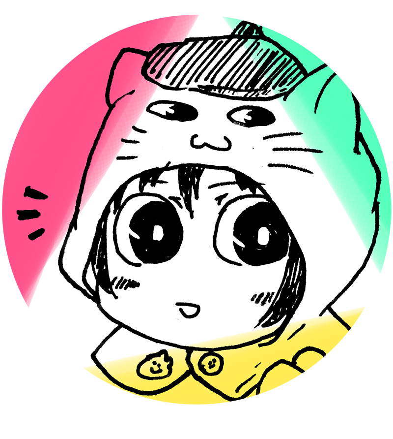

しおりも / 創作系webサービスの人
創作活動・同人活動に使える便利なWebサービスを作ったりしています。
一次創作沼の住人です（サービスは二次創作の方でも使えるものが多いです）。
Twitter/@shiorimo
Webサービス
マンガ
- SFマンガ（コピー誌）『Shall we be at a will?』（みちのくコミティアで公開、紙媒体のみ）
- 成人向けマンガ『パパ、私、自分のカラダがほしい』 （COMITIA106で公開、紙媒体のみ）
- Webマンガ『ゆにばーさる・あんど・しりあす』（このサイトで公開）
- バンドものマンガ『CATH』（COMITIA104で公開、紙媒体のみ）
- ゆるゆる京子本『2nd Impression of the Earth』 （Girls Love Festivalで公開、紙媒体のみ）
- SFマンガ『1/2チャンネルステレオサラウンド』 （COMITIA99で公開、合同誌内、紙媒体のみ）
- SFマンガ『こたえあわせ』 （COMITIA98で公開、合同誌内、紙媒体のみ）
楽曲
音楽するときは orkinus 名義です。違うときもあります。
アニメーション
『ニコラのこころ』は作りかけで挫折したやつですが供養のために掲載しておきます……。